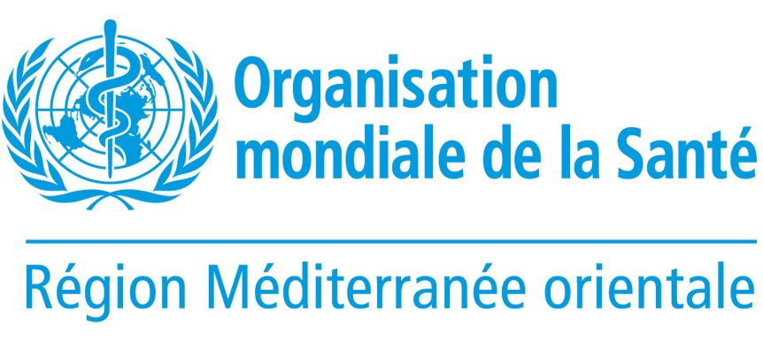

Processus de Planification 2026
Stratégie Nationale de

Stratégie Nationale de
Vaccination (SNV) 2027-2030
Plateforme collaborative et documentaire dédiée à l'élaboration de la nouvelle feuille de route vaccinale pour la République de Djibouti, alignée sur l'Agenda d'Immunisation 2030 (IA2030).
